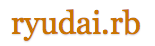

<!doctype html>
<html>
  <head>
    <meta charset="utf-8">
    
    <!-- Always force latest IE rendering engine or request Chrome Frame -->
    <meta content="IE=edge,chrome=1" http-equiv="X-UA-Compatible">
    
    <!-- Use title if it's in the page YAML frontmatter -->
    <title>沖縄Ruby会議01</title>
    
    <link href="stylesheets/normalize.css" media="screen" rel="stylesheet" type="text/css" />
<link href="stylesheets/all.css" media="screen" rel="stylesheet" type="text/css" />
    <script src="javascripts/all.js" type="text/javascript"></script>
    <style>
body {
  padding-top: 50px;
}
.starter-template {
  padding: 40px 15px;
  text-align: center;
}
    </style>
  </head>
</html>


  <body>

    <div class="navbar navbar-inverse navbar-fixed-top" role="navigation">
      <div class="container">
        <div class="navbar-header">
          <button type="button" class="navbar-toggle" data-toggle="collapse" data-target=".navbar-collapse">
            <span class="sr-only">Toggle navigation</span>
            <span class="icon-bar"></span>
            <span class="icon-bar"></span>
            <span class="icon-bar"></span>
          </button>
          <a class="navbar-brand" href="#">沖縄Ruby会議01</a>
        </div>
        <div class="collapse navbar-collapse">
          <ul class="nav navbar-nav">
            <li class="active"><a href="#">ホーム</a></li>
            <li><a href="#about">概要</a></li>
            <li><a href="#access">アクセス</a></li>
            <li><a href="#contact">連絡先</a></li>
          </ul>
        </div>
      </div>
    </div>

    <div class="container">
      <div class="welcome">
  <!--
  <p class="doc">
    <i class='icon-eye-close'></i>
    <i class='glyphicon-eye-close'></i>
  </p><!-- .doc -->
  </img>
  <div id="about"></div>
  <br />
  <br />
  <h2 id="goals">概要</h2>
  <ul style='list-style-type:none;'>
    <li>名称: 沖縄Ruby会議01</li>
    <li>日時: 2014年3月1日 13:00-17:00</li>
    <li>場所: 琉球大学 工学部１号館 大教室 322 (講演用) & 321 (作業用) [<a href="https://maps.google.co.jp/maps/ms?ie=UTF8&brcurrent=3,0x34e56d1df2e32fe5:0xb46dc2f85de43f4b,1&oe=UTF8&msa=0&msid=105655023061209926360.0004954ae235a0ff9b428">Google Map</a>]</li>
  </ul>
  <h2>開催目的</h2>
  <ul style='list-style-type:none;'>
    <li>1. 沖縄のコミュニティ間の親睦を深めたい! </li>
    <li>2. 沖縄の人達にRubyを知ってもらたい! (できれば仕事で使ってもらいたい...!!)</li>
    <li>3. 県内外のエンジニアが交流する場を設けたい!</li>
  </ul>

  <h2>プログラム (随時更新中!)</h2>
  <ul style='list-style-type:none;'>
    <li>1. 開会 (13:00) by <a href="http://twitter.com/yasulab">@yasulab</a><li></li>
    <li>2. ゲスト講演: 「※タイトル未定」 by <a href="https://twitter.com/yukihiro_matz">@yukihiro_matz</a></li>
    <br />
    <li>3. ゲスト講演: 「Rubyを使って3人/日でアプリをリリースしよう」 by <a href="http://twitter.com/masuidrive">@masuidrive</a></li>
    <ul style='list-style-type:none;'>
      <li>昨年のゴールデンウィークを使って開発したMarkdown対応の<br />
	オンラインメモ帳サービス"<a href='http://wri.pe/'>wri.pe</a>"の開発手法について解説します。<br />
	<br />
      「個人サービスだからと言われないものを」という想いでサーバー、<br />
	設計、実装、UI、デザイン、マーケティングまで、下記の様な技術を使いほぼ一人で行いました。<br />
	<br />
      この中に一つでも興味のあるものが、あれば聞きにきてみませんか？<br />	
	<ul>
	  <li>Rails4.0 + Ruby2.0</li>
	  <li>Heroku</li>
	  <li>Capybara + RSpecを使った自動テスト</li>
	  <li>Backbone.js</li>
	  <li>HTML5 AppCache + Storage</li>
	  <li>Google App Script</li>
	  <li>Analytics Measure API</li>
	</ul>
	<br /></li>
    </ul>
      
    <li>4. Lightning Talks Session 1 (順番は暫定です)</li>
    <ul style='list-style-type:none;'>
      <li>※ １月下旬に、LT発表者および発表内容を公開する予定です。</li>
    </ul>
    <br />
    <li>5. 県内コミュニティ活動の紹介</li>
    <ul>
      <li><a href="https://www.facebook.com/groups/ruby.okinawa/">Ryukyu Rubyist Rookies</a></li>
      <li><a href="http://lingr.com/room/ryudairb">Ryudai.rb</a></li>
      <li><a href="http://qwik.jp/okinawarb/">Okinawa.rb</a></li>
      <li><a href="http://hackers-champloo.org/">Hackers Champloo 2014</a></li>
      <li><a href="http://text.geeoki.com/">ギークハウス沖縄</a></li>
    </ul>
    <br />
    <li>6. Lightning Talks Session 2</li>
    <ul style='list-style-type:none;'>
      <li>※ １月下旬に、LT発表者および発表内容を公開する予定です。</li>
    </ul>
    <br />
    <li>7. 閉会 (17:00) by <a href="http://twitter.com/yasulab">@yasulab</a><li>
    <li>8. 懇親会 (17:30〜)</li>
    <ul style='list-style-type:none;'>
      <li>※ 懇親会会場: <a href="http://www.paikaji.jp/tenpo/okikoku.html">ぱいかじ</a></li>
    </ul>
    
  </ul>

  <h2>LTスピーカー募集！</h2>
  <ul style='list-style-type:none;'>
    <li>沖縄Ruby会議でLightning Talksをしてくれる方を募集しています！</li>
    <li>「Ruby」という一言が入っていれば、どんなテーマでも大丈夫です :D</li>
    <li></li>
    <li>下記の参加フォームの<strong>アンケート項目を使ってLTに応募する</strong>ことができるので、<li>
    <li>お気軽な気持ちでご応募して頂けると幸いです。</li>
    <li>なお、LT応募の〆切は特になく、応募者全員が発表できるように取り計らいますが、</li>
    <li>直前のLT応募については、プログラムの都合上お断りする可能性があるのでご注意下さい。</li>
    <li>それでは、皆様のLT応募をお待ちしております！</li>
    <br />
    <li><a href="http://okrk01.doorkeeper.jp/events/7599"><button type="button" class="btn btn-primary btn-lg">LT応募する</button></a></li>
  </ul>

  <h2>参加するためには？</h2>
  <ul style='list-style-type:none;'>
    <li>下記の参加フォームから参加表明できるので、お気軽にご参加ください！</li>
    <li><strong>参加費は無料</strong>です！</li>
    <br />
    <li><a href="http://okrk01.doorkeeper.jp/events/7599"><button type="button" class="btn btn-primary btn-lg">参加する</button></a></li>
  </ul>
  <h2>ハッシュタグ</h2>
  <ul style='list-style-type:none;'>
    <li><h3><a href="https://twitter.com/search?q=okrk01&src=typd&f=realtime">#okrk01</a></h3></li>
  </ul>

  <!--
  <h2>沖縄Rubyコミュニティの活動例</h2>
  <script async class="speakerdeck-embed" data-id="c0d177105709013064ed12313d0539fd" data-ratio="1.2994923857868" src="//speakerdeck.com/assets/embed.js"></script>
  -->
  
  <h2 id="access">アクセス</h2>
  <ul style='list-style-type:none;'>
    <h3>会場および那覇付近の宿泊施設まとめ</h3>
    <ul>
      <li><p><a href="https://mapsengine.google.com/map/viewer?mid=zhO0HjCLwsc8.kcSfXe4XJmSc&amp;hl=ja">GoogleMap</a></p></li>
    </ul>
    <h3>琉球大学へバスで移動の場合</h3>
    <ul>
      <li><a href="http://www.u-ryukyu.ac.jp/univ_info/general/access/access.html">琉球大学へのアクセス-路線･高速バス編</a></li>
      <li>詳しいバスの時刻表/乗り換え案内を確認するには<a href="http://www.busnavi-okinawa.com/map/">バスなび沖縄</a>が便利です</li>
    </ul>
    <h3>懇親会会場</h3>
    <ul style='list-style-type:none;'>
      <li><p><a href="http://www.paikaji.jp/tenpo/okikoku.html">ぱいかじ沖国前店</a></p></li>
      <li><p>琉球大学から懇親会会場への移動手段は車となります。<br />
	  地元の人の車に同乗するかタクシー相乗りとなります。<br />
	  なお、タクシーは当日に手配できる体制をとります。 </p></li>
    </ul>
  </ul>

  <h2 id="contact">連絡先</h2>
  <ul style='list-style-type:none;'>
    <li></img></li>
  </ul>
  
  <h2>主催</h2>
  <ul style='list-style-type:none;'>
    <li><a href="http://qwik.jp/okinawarb/"></img></a></li>
    <br />
    <li><a href="https://www.facebook.com/groups/ruby.okinawa/"></img></a></li>
    <br />
    <li><a href="http://lingr.com/room/ryudairb"></img></a>  </li>
  </ul>

  <h2>協力</h2>
  <ul style='list-style-type:none;'>
    <li><a href="http://ruby-no-kai.org/"></img></a></li>
    <br />
    <li><a href="http://text.geeoki.com/"></img></a></li>
  </ul>

  <h2>実行委員会 (スタッフ)</h2>
  <ul style='list-style-type:none;'>
    <li>実行委員長: <a href="http://twitter.com/yasulab">@yasulab</a></li>
    <li>副実行委員長: <a href="http://twitter.com/webcrafts">@webcrafts</a></li>
    <li>るびまレポート係: <a href="http://twitter.com/kimihito_">@kimihito_</a></li>
    <li>会計係: <a href="http://twitter.com/yasulab">@yasulab</a></li>
    <li>ウェブサイト制作 (<a href="http://github.com/okinawarb/okrk01">リポジトリ</a>):
      <a href="http://twitter.com/tompng">@tompng</a>,
      <a href="http://twitter.com/hanachin_">@hanachin_</a>,
      <a href="http://twitter.com/yasulab">@yasulab</a>
    </li>
  </ul>
  <br />

  <p><a href="http://middlemanapp.com/">Powered by Middleman</a></p>
</div><!-- .welcome -->

    </div>
  </body>
</html>
